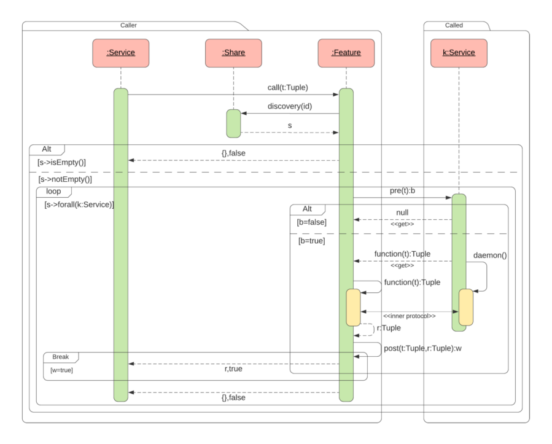

Pattern¶
The design pattern Share is made up of three classes:
Share
Service
Feature
Share manages the common space for sharing services and services with Feature the implementation of the service.
Each service must subscribe to at least one sharing service provider to allow others to use the service.
Description¶

The share pattern is a metaprogramming pattern 1 since some parts of the service are known only at the time of execution and depend on the state of the system
The definition of a service requires the coding of a function
function and its daemon resident component, if any. A pre predicate specifies the
preconditions for function.
A string attribute identifies service in a unique world. For example an SNMP MIB can be used to identify a service.
Note
A management information base (MIB) is a database used for managing the entities in a communication network. Most often associated with the Simple Network Management Protocol (SNMP), the term is also used more generically in contexts such as in OSI/ISO Network management model.
In function coding there may be calls to external services that are specified by implementations of
Feature. The id attribute defines a regular expression that describes semantically the service requested. The invocation of a service within function
occurs through the call invocation relating to a specification present in features.
The call operation invokes discovery with an id attribute to identify everyone
the services subscribed to Share to which the calling service is subscribed. If he comes
produced a non-null set of services, the next phase of invocation of services.
The primitive get is used for this phase get code from a service
Sequence Diagram¶
The use of the pattern can be achieved by defining a concrete Share class and two abstract classes Service and Feature.
So while the Share class can be created directly, the Share pattern specifies the behavior the pattern requires
basically the implementation of function, daemon, pre and post using unchanged the functionality of the
remaining operations related to the structure of the pattern.
In the pattern structure, the subscription to the Share service is not places no constraints. So you can subscribe to multiple Share or only one. Another aspect is the interaction between daemon and function. The code associated with function is received by the get operator immediately after executed with daemon.
The interaction between function and daemon takes place through unforeseen protocols
from the pattern. For example, the protocol can be used as 0MQ. There
correct interaction between function and daemon is guaranteed by the fact that both they are developed by the same programmer.
Note
ZeroMQ is a high-performance asynchronous messaging library, aimed at use in distributed or concurrent applications. It provides a message queue, but unlike message-oriented middleware, a ZeroMQ system can run without a dedicated message broker.
The attach operation is used to register with a subscriber. Any positive can be a subscriber however it is plausible that only a few provide
this service. The search for a service is done through a descriptive string.
Could be an ontological descriptor or simply a protocol MIB string
SNMP. The match function was used in the specification and the pattern allows the nested call of services
- 1
Metaprogramming is a programming technique in which computer programs have the ability to treat other programs as their data. It means that a program can be designed to read, generate, analyze or transform other programs, and even modify itself while running.